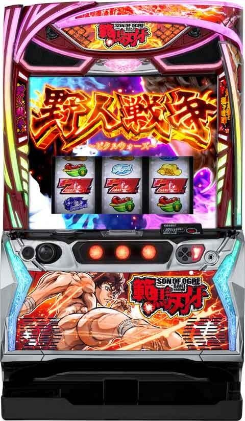
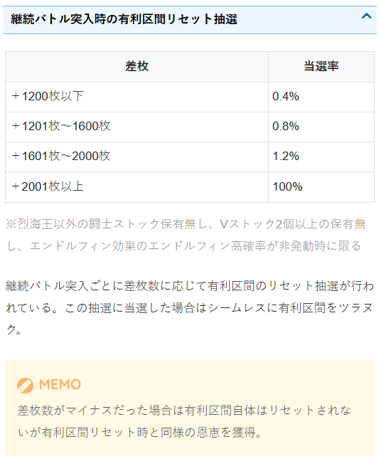
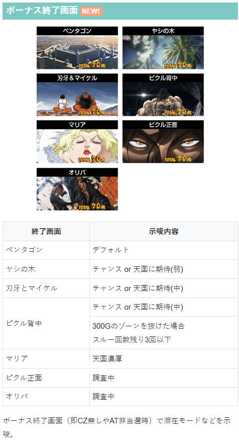
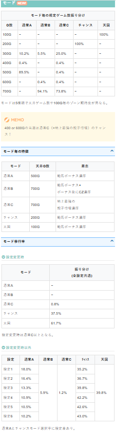
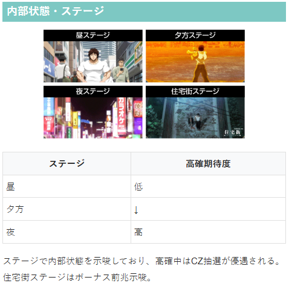

スマスロ範馬刃牙


狙い目
【リセット狙い】
0スルー 50Gから
【ゲーム数天井狙い】
0,1,3スルー 400Gから
2スルー 350Gから
4スルー 280Gから
5スルー以降 0GからAT当選まで
【ゾーン狙い】
100Gゾーン
0,1,3スルー 85Gから
2,4スルー 80Gから
200Gゾーン
0,1,3スルー 150Gから
2,4スルー 130Gから
※ゾーンの当選分布は下二桁30-40Gに集中している
【示唆関連の押し引きについて】
エンドルフィン発動準備状態は消化した方が良さそう。
ボーナス終了画面
マリア 即CZ無し、AT非当選時は天国濃厚のため天国フォロー
【有利区間関連狙い】
差枚+1500枚以上かつ一撃1500枚以上出たATが無い台 0Gから200ゾーン抜けまで、またはボーナス当選まで
※履歴から有利切断タイミングが判断出来ないと思われる。下記の様に+2001枚以上で確実に有利区間切断する模様。

やめ時
ボーナス後はブラックペンタゴン消化してやめ。
CZ失敗後はCZを複数ストックしてる事があるため、数G回した方が良いかも？
AT終了後は引き戻しを確認してやめ？即やめでも良さそう？
その他
ボーナス終了画面

モード

内部状態・ステージ

参考元
基本情報
- メーカー: オリンピア
- 機械割: 97.7% 〜 110.6%
- 導入開始日: 2026年02月02日（月）
- ゲーム性概要: ●通常時はレア役でCZを、ゲーム数消化でボーナスを目指すゲーム性 ●初当りの範馬ボーナス中はCZやATを抽選 ●CZに成功すればAT突入 ●ATはゲーム数管理型で純増は2.8枚or5.2枚/G ●AT終了後は5G間の継続ジャッジへ突入 ●約1/112で突入する乾坤一擲チャンスは約1/4で3桁ゲーム数を上乗せ！


打ち方
打ち方・小役
打ち方（小役狙い）
［最初に狙う絵柄］ 左リール上段付近にBARを目押し。
［スイカ停止時］ 中リールにスイカを目押し（BAR目安）、右リールはフリー打ちでOKだ。
［レア役の停止例］
レア役強化発動中は弱レア役が強レア役、強レア役が超レア役になる。
変則押しはNG
ナビ非発生時は左1stでの消化を推奨だ。
解析情報通常時
小役関連
小役確率
| 役 | 確率 |
|---|---|
| リプレイA（逆押しで7が揃うリプ） | 1/45.7 |
| リプレイB（逆押しで7が揃わないリプ） | 1/8.7 |
| 共通ベル | 1/17.8 |
| 弱チェリー | 1/107.4 |
| スイカ | 1/75.2 |
| 強チェリー | 1/524.3 |
| チャンス目 | 1/321.3 |
| エンドルフィン目 | 1/198.0 |
| 1枚役 | 1/1.3 |
エンドルフィン効果の「レア役強化」発動中は、弱レア役が強レア役、強レア役が超レア役扱いになる。
小役の合算確率
| 役 | 確率 |
|---|---|
| 小役揃い（乾坤一擲チャンスが成功する確率） | 1/4.4 |
| レア役以上（エンドルフィン目含む） | 1/30.6 |
| 弱レア役（弱チェリー・スイカ） | 1/44.2 |
| 強レア役（強チェリー・チャンス目） | 1/199.2 |
エンドルフィン高確率中のエンドルフィン目確率
| 状態 | 確率 |
|---|---|
| ナビなし | 1/198.0 |
| ナビあり | 1/5.9 |
| 合算 | 1/5.7 |
内部状態関連
高確・超高確
弱レア役でCZ当選率が優遇される高確・超高確率移行を抽選。 河原ステージ（夕方）は高確示唆、繁華街ステージ（夜）は超高確を示唆している。
高確・超高確 性能
| 当選契機 | 弱レア役時の抽選 |
|---|---|
| 保障ゲーム数 | 20G（高確・超高確共通） |
| 転落抽選 | 20G消化後のレア役以外の約1/2で転落 |
| 滞在中の抽選 | 通常＜高確＜超高確でCZ当選率がアップ |
弱レア役時の高確・超高確当選率
| 移行先 | 当選率 |
|---|---|
| 通常→高確 | 20.3% |
| 高確→超高確 | 15.6% |
超高確は高確中からのみ移行する可能性がある。
モード
通常モードの天井ゲーム数
| モード | 天井ゲーム数 |
|---|---|
| 通常A | 500G＋α |
| 通常B | 700G＋α |
| 通常C | 700G＋α |
| チャンス | 200G＋α |
| 天国 | 100G＋α |
規定ゲーム数到達時の恩恵
| モード | 恩恵 |
|---|---|
| 通常A | 範馬ボーナス濃厚 |
| 通常B | 範馬ボーナス＋CZ濃厚 |
| 通常C | 地上最強の親子喧嘩濃厚 |
| チャンス | 範馬ボーナス濃厚 |
| 天国 | 範馬ボーナス濃厚 |
通常モードごとのボーナス当選率
| ゲーム数 | 通常A | 通常B | 通常C | チャンス | 天国 |
|---|---|---|---|---|---|
| 100G | 100% | ||||
| 200G | 100% | ||||
| 300G | 10.2% | 5.5% | 25.0% | ||
| 400G | 0.4% | 0.4% | |||
| 500G | 89.5% | 0.4% | |||
| 600G | 0.4% | 0.4% | |||
| 700G | 94.1% | 73.8% |
設定変更（リセット）時のモード振り分け
| モード | 振り分け |
|---|---|
| 通常A | 一 |
| 通常B | 一 |
| 通常C | 0.8% |
| チャンス | 61.7% |
| 天国 | 37.5% |
設定変更時のモード移行ポイント
天国＋チャンスの合計選択率約99% → 基本的に200Gゾーンまでに当選
200Gゾーンを超えた場合は通常C濃厚 → 地上最強の親子喧嘩濃厚
ボーナス当選後のモード振り分け
天国移行率は全設定共通。通常B〜チャンスの振り分けが高設定ほど優遇される。
ボーナス後モード移行のポイント
天国＋チャンスの合計選択率約75% → 200Gゾーンまでに約75%が当選
天国＋チャンス＋通常Ａの合計選択率約93% → 500Gゾーンまでに約94%が当選
500Gゾーンを超えた場合は通常Ｂor通常Ｃ → ボーナス後のCZor親子喧嘩濃厚
前兆ステージ
前兆ステージ概要
［リアルシャドー］
［ブラックペンタゴン］
前兆ステージ
| リアルシャドー | ボーナス前兆ステージ |
|---|---|
| ブラックペンタゴン | CZ前兆ステージ |
直撃抽選ステージ
大都会ステージ概要
エンドルフィン効果の一部で突入するAT直撃の高確率ゾーン。滞在中は全役でATを抽選、もちろんレア役はAT直撃のチャンスだ。 エンドルフィン効果経由で移行した場合は直撃当選率が優遇されるため、AT当選の大チャンスになる。
大都会ステージ
| 突入契機 | エンドルフィン効果（大都会） |
|---|---|
| 継続ゲーム数 | 15G＋α |
| AT直撃期待度 | 約65%（AT終了後は約5%） |
| 消化中の抽選 | 全役でAT抽選（レア役はチャンス） |
| 備考 | 15G消化後はレア役以外の約1/2で転落 |
［ピクル咆哮でAT濃厚］
大都会ステージ中のAT直撃当選率
| 役 | AT終了後以外 | AT終了後 |
|---|---|---|
| その他 | 4.7% | 一 |
| 弱レア役 | 25.0% | 1.2% |
| 強レア役 | 75.0% | 50.0% |
| 超レア役 | 100% | 100% |
AT終了後に移行する大都会ステージはレア役でのみ抽選かつ、レア役時の当選率も低めになっている。
エンドルフィン効果
エンドルフィン効果概要
エンドルフィン目成立後に移行する 6G間の「発動準備状態」 で小役を引けばエンドルフィン効果は発動。発動した効果はリールの下側に表示される。 ちなみに、発動準備状態に移行するのは通常時とAT中のみで、その他の状態のエンドルフィン目は弱レア役扱いになる。
［通常時］エンドルフィン効果発動DATA
| エンドルフィン目確率（押し順ナビ含む） | 1/148.7 |
|---|---|
| エンドルフィン高確率中のエンドルフィン目確率 | 1/5.7 |
| 発動準備継続ゲーム数 | 6Gor無限 |
| エンドルフィン効果発動率 （発動準備で小役を引ける期待度） | 80.4% |
発動準備状態のゲーム数振り分け
| ゲーム数 | 振り分け |
|---|---|
| 6G | 99.6% |
| 無限 | 0.4% |
小役が成立するまで発動準備状態が継続する無限パターンもある。
エンドルフィン効果
| エンドルフィン高確率 | 15G間、押し順エンドルフィン目をフルナビ （1/5.7でエンドルフィン目出現） |
|---|---|
| レア役強化 | 15G間、弱レア役は強レア役相当、 強レア役は超レア役相当の抽選を受けられる |
| 狙えッ発生率UP | 次回成立したリプレイで7を狙えが発生 |
| 敗北を知りたいッ | 次回のバトルが勝利濃厚 |
| 大都会 | 大都会ステージへ移行 |
| 野人戦争勃発 | AT突入 |
| VPUSH降臨 | 地上最強の親子喧嘩突入 |
| 勇次郎徘徊中ッ | 勇次郎登場のチャンス |
「敗北を知りたいッ」はAT中にのみ獲得できる。通常時の勇次郎徘徊中ッは効果発動中（30G間）にATに当選すれば地上最強の親子喧嘩濃厚になる。
［発動準備状態］ リールの左側に注目。6G以内の小役入賞に期待だ。
［エンドルフィン効果発動］
［リール下部の効果発動中表示］
最大で4個まで獲得。4個目は必ず「勇次郎徘徊中ッ」になる。
狙えッ発生率UP中の7揃い抽選
狙えッ発生率UP中は初回のリプレイ成立で狙えカットインが発生。リプレイBを引いていれば7揃い（範馬ボーナス）濃厚となる。
リプレイ確率＆比率
| 役 | 確率 | 比率 |
|---|---|---|
| リプレイA（7揃い→範馬ボーナス） | 1/45.7 | 約16% |
| リプレイB（フェイク→効果終了） | 1/8.7 | 約84% |
エンドルフィン効果獲得抽選
1個目のエンドルフィン効果は基本の「レア役強化」・「エンドルフィン高確率」・「狙えッ発生率UP」からいずれかを決定。効果発動中の2＆3個目は、基本的に獲得していない効果を抽選で獲得、4個目は「勇次郎徘徊中ッ」獲得する…というのが基本的な流れ。 ただし、効果の 獲得契機役（発動準備状態で引いた小役）に応じて特殊効果発動（効果の書き換え） を抽選。この抽選に当選した場合は「大都会」・「野人戦争勃発」・「VPUSH降臨」から抽選で選択される。
［非レア役時］エンドルフィン効果獲得率 初回の効果獲得時
| 獲得効果 | 振り分け |
|---|---|
| EP高確率 | 6.3% |
| レア役強化 | 46.9% |
| 狙えッ | 46.9% |
効果1個発動中
| 獲得効果 | EP高確率発動中 | レア役強化発動中 | 狙えッ発動中 |
|---|---|---|---|
| EP高確率 | 一 | 6.3% | 6.3% |
| レア役強化 | 50.0% | 一 | 93.8% |
| 狙えッ | 50.0% | 93.8% | 一 |
効果2個発動中
| 獲得効果 | いずれか2個が複合 |
|---|---|
| EP高確率 | 非発動中の効果発動濃厚 |
| レア役強化 | 非発動中の効果発動濃厚 |
| 狙えッ | 非発動中の効果発動濃厚 |
効果3個発動中
| 獲得効果 | 3個が複合 |
|---|---|
| EP高確率 | 「勇次郎徘徊中ッ」発動濃厚 |
| レア役強化 | 「勇次郎徘徊中ッ」発動濃厚 |
| 狙えッ | 「勇次郎徘徊中ッ」発動濃厚 |
※EP高確率…エンドルフィン高確率、狙えッ…狙えッ発生率UPの略
特殊効果当選率
| 発動契機役 | 当選率 |
|---|---|
| レア役以外 | 0.4% |
| 弱レア役 | 1.6% |
| 強レア役 | 50.0% |
特殊効果当選時の発動（書き換え）効果振り分け
| 発動効果 | 振り分け |
|---|---|
| 大都会 | 94.9% |
| 野人戦争勃発 | 4.7% |
| VPUSH降臨 | 0.4% |
強レア役を引けば50%で「大都会」以上が発動。「大都会」でもAT当選期待度約65%と高いため大チャンス。「野人戦争勃発」はAT直撃、振り分けは低いが「VPUSH降臨」なら地上最強の親子喧嘩濃厚だ。
真ッ向勝負ッッ（CZ）
CZ概要
成立役に応じて勝利（AT）を抽選する10G間の自力バトル。勝利後にゲーム数が残っていた場合は追加報酬獲得のチャンスになる。
真ッ向勝負ッッ（CZ）性能
| 当選契機 | 通常時のレア役の抽選、範馬ボーナス中の抽選 |
|---|---|
| 確率 | 1/345.5 |
| 継続ゲーム数 | 10G |
| AT期待度 | 約53% |
| 消化中の抽選 | 全役でAT抽選 |
| 備考 | AT当選後は余剰ゲーム数で追加報酬を抽選 |
成立役ごとの成功期待度
| 役 | 期待度 |
|---|---|
| ベル・リプレイ | 約23% |
| 弱レア役 | 約50% |
| 強レア役以上 | 100% |
※最終ゲームは弱レア役でもAT濃厚
CZ本前兆中も非前兆中と同じ確率でCZストックを抽選しているため、終了後に前兆を経て再度CZへ突入するパターンもある。
［オリバとのバトル］
［勝利すればAT］
［追加報酬］
（追加）報酬一覧
| 成功回数 | 報酬 |
|---|---|
| 1回目（初回） | AT濃厚 |
| 2回目 | Vストック濃厚 |
| 3回目 | 範馬ボーナス（AT中）濃厚 |
| 4回目 | 地上最強の親子喧嘩濃厚 |
CZ中の報酬アップ（AT）当選率
| 役 | 最終ゲーム以外 | 最終ゲーム |
|---|---|---|
| その他 | 一 | 0.4% |
| リプレイ | 23.0% | 23.0% |
| 共通ベル | 23.0% | 23.0% |
| 弱レア役 | 50.0% | 100% |
| 強レア役 | 100% | 100% |
| 超レア役 | 100% | 100% |
AT確定後の報酬ランクアップ中も抽選値は一律。開始画面でも上記数値で抽選されていて、当選した場合は最終ゲームに告知される。
CZ当選率
| 滞在状態 | 弱レア役 | 強レア役 | 超レア役 |
|---|---|---|---|
| 通常 | 0.4% | 12.5% | 100% |
| 高確 | 0.4% | 50.0% | 100% |
| 超高確 | 75.0% | 100.0 | 100% |
内部状態によってCZ当選率が変化。超レア役は状態不問でCZ当選濃厚なので、エンドルフィン効果の「レア役強化」発動中は要注目だ。
天井
AT当選時のボーナス回数割合（集計データ値）
| ボーナス回数 | 設定1 | 設定2 | 設定3 |
|---|---|---|---|
| 0回 | 14.6% | 14.4% | 13.8% |
| 1回 | 38.9% | 38.7% | 38.7% |
| 2回 | 20.4% | 20.5% | 20.4% |
| 3回 | 12.5% | 12.6% | 12.7% |
| 4回 | 5.9% | 6.0% | 6.2% |
| 5回 | 3.6% | 3.9% | 4.9% |
| 6回 | 1.7% | 1.7% | 1.6% |
| 7回 | 2.3% | 2.2% | 1.8% |
| ボーナス回数 | 設定4 | 設定5 | 設定6 |
| 0回 | 13.4% | 13.3% | 13.1% |
| 1回 | 38.4% | 38.5% | 38.5% |
| 2回 | 20.6% | 20.5% | 20.6% |
| 3回 | 12.8% | 12.9% | 12.8% |
| 4回 | 6.3% | 6.3% | 6.3% |
| 5回 | 6.4% | 6.6% | 6.7% |
| 6回 | 1.2% | 1.2% | 1.2% |
| 7回 | 1.0% | 0.9% | 0.9% |
※大都会ステージでの引き戻し＆設定変更後は除いた数値
設定変更時
設定4以上はスルー回数天井が大きく優遇。とくに設定変更後は設定差が大きいので注目しておきたい。
フリーズ
ロングフリーズ性能
| 当選確率 | 約1/30000 |
|---|---|
| 恩恵 | 地上最強の親子喧嘩濃厚 |
解析情報ボーナス時
範馬ボーナス
初当り時の範馬ボーナス概要
初当り時の範馬ボーナスでは、おもにCZを抽選。消化中にCZが告知されることもあるが、終了後のブラックペンタゴン（前兆ステージ）を経て告知されることも多い。
範馬ボーナス（初当り時）性能
| 当選契機 | 規定ゲーム数消化の抽選 |
|---|---|
| 継続ゲーム数 | 25G |
| 純増 | 約2.8枚/G |
| CZ当選期待度 | 約52% |
| 消化中の抽選 | 成立役に応じてCZ抽選、7揃いでAT直行 |
成立役ごとのCZ当選率
| 役 | 当選率 |
|---|---|
| 弱レア役 | 約25％ |
| 強レア役 | 約85％ |
| 超レア役 | 100％ |
※ボーナス中のエンドルフィン目は弱レア役扱い
［7揃いでAT直行］
エンドルフィン効果の狙えッ発生率UP中は7が揃えばAT濃厚となる。
［スルー回数に注目］ AT非当選のスルー回数が「奇数回」の時は7揃いしやすい模様。 また、最大7回到達でAT濃厚!?
AT中の範馬ボーナス概要
AT中の範馬ボーナスはおもにAT5セット継続ごとの報酬として獲得。 消化中はATゲーム数の上乗せや「地上最強の親子喧嘩」への昇格を抽選する。
範馬ボーナス（AT中）性能
| 当選契機 | AT継続時の一部 |
|---|---|
| 継続ゲーム数 | 25G |
| 純増 | 約2.8枚/G |
| 消化中の抽選 | ATゲーム数上乗せ、地上最強の親子喧嘩抽選 |
［ATゲーム数上乗せ］
［7揃いで地上最強の親子喧嘩］
初当り範馬ボーナス中のCZ当選率
| 役 | 当選率 |
|---|---|
| その他 | 1.6% |
| リプレイ | 2.0% |
| 共通ベル | 2.0% |
| 弱レア役 | 25.0% |
| 強レア役 | 85.2% |
| 超レア役 | 100% |
内部的にCZが当選している状態で再度CZに当選した場合は、CZのゲーム数が3G加算される。
狙えッ発生率UP中の7揃い抽選
7揃いは基本的にスルー回数天井に到達しているかどうかのジャッジとして発生。 スルー回数天井以外でもエンドルフィン効果の狙えッ発生率UP中は7が揃えばAT濃厚になる。
野人戦争（AT）
AT概要
ゲーム数管理型のATで、終了後は5Gの継続ジャッジ（地球史上最強決定戦）へ突入。 消化中はゲーム数上乗せや腕力比較べ（AT中CZ）が抽選される。
野人戦争（AT）性能
| 当選契機 | CZ成功時、直撃時など |
|---|---|
| 継続ゲーム数 | 初回：50G＋α、2セット目以降：30G＋α |
| 純増 | 約2.8or5.2枚/G |
| 消化中の抽選 | ATゲーム数上乗せ、腕力比較べ抽選、 Vストック、エンドルフィン目ナビ発生 |
［ATゲーム数直乗せ］ 上乗せ後は必ず乾坤一擲チャンスへ！
［7を狙え］ エンドルフィン効果で7が揃った場合はVストックを獲得できる。
「1枚役の連続でエンドルフィン目ナビを抽選」 1枚役を連続で引くとエンドルフィン目の押し順ナビ発生のチャンスだ。
押し順ベル確率
| 役 | 純増2.8枚/G時 | 純増5.2枚/G時 |
|---|---|---|
| 押し順ベル | 1/3.8 | 1/3.8 |
| 色目押しベル | 1/7.5 | 1/2.9 |
地上最強の親子喧嘩中を含め、地上最強の親子喧嘩完走後は純増が5.2枚/Gにアップする。
ゲーム数上乗せ当選率
| 役 | 当選率 |
|---|---|
| 弱レア役 | 0.8% |
| 強レア役 | 42.2% |
| 超レア役 | 100% |
上乗せ後は必ず乾坤一擲チャンスへ突入する。
AT準備中などのVストック当選率
| 役 | 当選率 |
|---|---|
| 弱レア役 | 0.4% |
| 強レア役 | 10.2% |
| 超レア役 | 100% |
AT準備中や内部的に腕力比較べや継続ジャッジに勝利している状態などでのレア役はVストックを抽選。 ただし、Vストックに当選しても液晶上は表示されない。
エンドルフィン効果
AT中のエンドルフィン効果
基本的には通常時と同じ流れで、エンドルフィン目成立後の「発動準備状態」で小役を引けばエンドルフィン効果が発動する。
エンドルフィン効果（AT中）
| エンドルフィン高確率 | 15G間、押し順エンドルフィン目の出現率アップ （エンドルフィン目確率1/5.7） |
|---|---|
| レア役強化 | 15G間、弱レア役でも強レア役相当の抽選を受けられる |
| 狙えッチャレンジ | 次回成立したリプレイで7を狙えが発生 |
| 敗北を知りたいッ | 次回の腕力比較べが勝利濃厚 |
| VPUSH降臨 | 地上最強の親子喧嘩突入 |
| 勇次郎徘徊中ッ | 勇次郎登場のチャンス |
「勇次郎徘徊中ッ」は 30G継続 して、発動中はゲーム数上乗せ時なら 勇次郎上乗せ濃厚（乾坤一擲チャンス成功） 、腕力比較べ当選時は 闘士3人撃破濃厚 、継続ジャッジ突入時は 地上最強の親子喧嘩 という超強力な恩恵を獲得することができる。
［AT中］エンドルフィン効果発動DATA
| エンドルフィン目確率（押し順ナビ含む） | 1/119.1 |
|---|---|
| エンドルフィン高確率中のエンドルフィン目確率 | 1/5.7 |
| 発動準備継続ゲーム数 | 6Gor無限 |
| エンドルフィン効果発動率 （発動準備で小役を引ける期待度） | 98.6% |
狙えッチャレンジ中の7揃い抽選
通常時と同じくリプレイAより先にリプレイBを引くことができれば範馬ボーナスを獲得できる。
エンドルフィン効果獲得抽選
大まかな流れは通常時と同じで、1個目は「レア役強化」・「エンドルフィン高確率」・「狙えッチャレンジ」から選ばれ、効果発動中の2＆3個目は、獲得していない効果から抽選で獲得という流れだが、通常時と異なり 2個目から低確率ながら「勇次郎徘徊中ッ」を獲得する可能性 がある（4個目は勇次郎徘徊中ッ濃厚）。
また、エンドルフィン効果獲得契機役不問で効果を獲得するたびに5.1%で「敗北を知りたいッ」への書き換え抽選をするところも通常時とは違うポイントだ。
［非レア役時］エンドルフィン効果獲得率 初回の効果獲得時
| 獲得効果 | 振り分け |
|---|---|
| EP高確率 | 2.7% |
| レア役強化 | 71.9% |
| 狙えッ | 25.4% |
効果1個発動中
| 獲得効果 | EP高確率発動中 | レア役強化発動中 | 狙えッ発動中 |
|---|---|---|---|
| 勇次郎徘徊 | 0.4% | 0.4% | 0.4% |
| EP高確率 | 一 | 2.7% | 2.7% |
| レア役強化 | 74.6% | 一 | 96.9% |
| 狙えッ | 25.0% | 96.9% | 一 |
効果2個発動中
| 獲得効果 | いずれか2個が複合 |
|---|---|
| EP高確率 | 「勇次郎徘徊中ッ」が0.4% 非発動中の効果発動が99.6% |
| レア役強化 | 「勇次郎徘徊中ッ」が0.4% 非発動中の効果発動が99.6% |
| 狙えッ | 「勇次郎徘徊中ッ」が0.4% 非発動中の効果発動が99.6% |
効果3個発動中
※EP高確率…エンドルフィン高確率、狙えッ…狙えッ発生率UP、勇次郎徘徊…勇次郎徘徊中ッの略
効果発動時の「敗北を知りたいッ」書き換え当選率
| 契機役 | 当選率 |
|---|---|
| 契機役不問 | 5.1% |
すでに「敗北を知りたいッ」を持っている場合、書き換え抽選はおこなわれない。
追撃チャンス（EX）
追撃チャンス概要
腕力比較べ勝利時の一部で獲得する2G間のATゲーム数上乗せゾーンだ。 終了後は乾坤一擲チャンスへ移行する。
追撃チャンス 性能
| 突入契機 | 腕力比較べ勝利時の一部 |
|---|---|
| 継続ゲーム数 | 2G |
| 消化中の抽選 | ATゲーム数を上乗せ |
追撃チャンスEX概要
地球史上最強決定戦で闘士ストックあり時に発展するゲーム数上乗せゾーン。 闘士ストックの種類で上乗せゲーム数期待度が変化する。
追撃チャンスEX 性能
| 突入契機 | 継続ジャッジでの闘士ストック使用後 |
|---|---|
| 消化中の抽選 | 闘士の種類で各種抽選が変化 |
［烈海王］
烈海王（連打上乗せ）
| 最低上乗せ | 50G |
|---|---|
| 平均上乗せ （乾坤一擲チャンス含まず） | 58.4G |
| 継続ゲーム数 | 5G＋α |
| 消化中の抽選 | 成立役に応じてゲーム数を上乗せ （1HITで＋5G） |
| 備考① | 1G目の小役で上乗せした分は 最終ゲームに加算 |
| 備考② | 4G目以降で小役以上が 成立しなかった場合に最終上乗せへ |
［愚地克巳］
愚地克巳（一撃上乗せ）
| 最低上乗せ | 50G |
|---|---|
| 平均上乗せ （乾坤一擲チャンス含まず） | 81.3G |
| 継続ゲーム数 | 2G（導入＋ジャッジ） |
| 消化中の抽選 | 2G目に98.4%×1G上乗せ |
| 備考 | 1G目・2G目の成立役に応じて 転落しない回数を加算 |
［ジャック・ハンマー］
ジャック・ハンマー（噛撃上乗せ）
| 最低上乗せ | 100G |
|---|---|
| 平均上乗せ （乾坤一擲チャンス含まず） | 262.6G |
| 継続ゲーム数 | 3G＋α |
| 消化中の抽選 | 50Gの分割上乗せ ［毎ゲーム50%で分割］ |
| 分割保障 | 1回 |
| 備考 | 1G目と2G目は分裂補償回数の 上乗せを抽選 |
ジャックは2G以降から50Gを分裂（2倍）する抽選がおこなわれ、最大16分割（800G）まで行く可能性がある。 約50%の分裂はマスごとにおこなわれるため、分裂に失敗したマスは抽選されない。レア役時は必ず分裂に成功する。
［範馬刃牙］
範馬刃牙（突撃上乗せ）
| 最低上乗せ | 110G |
|---|---|
| 平均上乗せ （乾坤一擲チャンス含まず） | 123.5G |
| 継続ゲーム数 | 5G＋α |
| 消化中の抽選 | 成立役に応じてゲーム数を上乗せ |
| 備考① | 1G目の小役で上乗せした分は 最終ゲームに加算 |
| 備考② | 4G目以降で小役以上が 成立しなかった場合に最終上乗せへ |
継続ジャッジ失敗→復活時（ないない それはない画面発生）に発生する。
［烈海王］上乗せゲーム数 最終ゲーム以外
| 上乗せゲーム数 （HIT数） | その他 | リプレイ | 共通ベル |
|---|---|---|---|
| ＋5G（1HIT） | 90.6% | 50.0% | 50.0% |
| ＋10G（2HIT） | 9.4% | 43.8% | 43.8% |
| ＋15G（3HIT） | 一 | 6.3% | 6.3% |
| ＋20G（4HIT） | 一 | 一 | 一 |
| ＋30G（6HIT） | 一 | 一 | 一 |
| ＋50G（10HIT） | 一 | 一 | 一 |
| 上乗せゲーム数 （HIT数） | 弱レア役 | 強レア役 | 超レア役 |
| ＋5G（1HIT） | 一 | 一 | 一 |
| ＋10G（2HIT） | 一 | 一 | 一 |
| ＋15G（3HIT） | 84.8% | 一 | 一 |
| ＋20G（4HIT） | 12.5% | 50.0% | 一 |
| ＋30G（6HIT） | 2.3% | 46.9% | 50.0% |
| ＋50G（10HIT） | 0.4% | 3.1% | 50.0% |
最終ゲーム
| 上乗せゲーム数 （HIT数） | その他 | リプレイ | 共通ベル |
|---|---|---|---|
| ＋30G（6HIT） | 99.6% | 50.0% | 50.0% |
| ＋35G（7HIT） | 0.4% | 43.8% | 43.8% |
| ＋40G（8HIT） | 一 | 6.3% | 6.3% |
| ＋45G（9HIT） | 一 | 一 | 一 |
| ＋50G（10HIT） | 一 | 一 | 一 |
| ＋55G（11HIT） | 一 | 一 | 一 |
| ＋60G（12HIT） | 一 | 一 | 一 |
| 上乗せゲーム数 （HIT数） | 弱レア役 | 強レア役 | 超レア役 |
| ＋30G（6HIT） | 一 | 一 | 一 |
| ＋35G（7HIT） | 一 | 一 | 一 |
| ＋40G（8HIT） | 84.4% | 一 | 一 |
| ＋45G（9HIT） | 12.5% | 24.6% | 一 |
| ＋50G（10HIT） | 2.3% | 37.5% | 37.5% |
| ＋55G（11HIT） | 0.4% | 37.5% | 37.5% |
| ＋60G（12HIT） | 0.4% | 0.4% | 25.0% |
※導入ゲームの上乗せは最終ゲームに加算 ※4G目以降で小役非成立の場合に最終上乗せ
最終ゲームは＋30G以上濃厚だ。
［愚地克巳］ループ抽選
| 結果 | 当選率 |
|---|---|
| 1G加算 | 98.4% |
| 終了 | 1.6% |
※50G以下で終わった場合は50Gを上乗せ ※最大＋500G
［愚地克巳］保障回数 （1・2G目に抽選）
| 保障 | その他 | リプレイ | 共通ベル |
|---|---|---|---|
| なし | 87.5% | 87.5% | 87.5% |
| 10G | 12.5% | 12.5% | 12.5% |
| 20G | 一 | 一 | 一 |
| 30G | 一 | 一 | 一 |
| 40G | 一 | 一 | 一 |
| 50G | 一 | 一 | 一 |
| 保障 | 弱レア役 | 強レア役 | 超レア役 |
| なし | 一 | 一 | 一 |
| 10G | 一 | 一 | 一 |
| 20G | 一 | 一 | 一 |
| 30G | 37.5% | 一 | 一 |
| 40G | 37.5% | 75.0% | 一 |
| 50G | 25.0% | 25.0% | 100% |
開始1〜2Gで保障回数を抽選して、3G目にループ上乗せで＋1Gずつ加算。トータルで50Gに満たなかった場合は、50Gが上乗せされる（＋49Gだった場合もトータルが＋50Gになる）。
［ジャック・ハンマー］分裂保障回数 （1・2G目に抽選）
| 保障 | その他 | 弱レア役 | 強レア役以上 |
|---|---|---|---|
| なし | 100% | 75.0% | 一 |
| 1回加算 | 一 | 25.0% | 100% |
※1回加算…1マス分の分裂を加算
［ジャック・ハンマー］分裂当選率 （マスごとに抽選）
| 結果 | その他 | レア役 |
|---|---|---|
| 終了 | 50.0% | 一 |
| 分裂 | 50.0% | 100% |
開始1〜2Gでレア役を引けば分裂の保障回数を抽選。以降はレア役なら分裂濃厚、レア役以外ならマスごとに50%で分裂を抽選する。
［範馬刃牙］上乗せゲーム数
| 上乗せゲーム数 | その他 | リプレイ | 共通ベル |
|---|---|---|---|
| ＋20G | 100% | 50.0% | 50.0% |
| ＋30G | 一 | 49.2% | 49.2% |
| ＋40G | 一 | 0.4% | 0.4% |
| ＋50G | 一 | 0.4% | 0.4% |
| ＋80G | 一 | 一 | 一 |
| 上乗せゲーム数 | 弱レア役 | 強レア役 | 超レア役 |
| ＋20G | 一 | 一 | 一 |
| ＋30G | 87.5% | 一 | 一 |
| ＋40G | 12.1% | 87.5% | 一 |
| ＋50G | 0.4% | 12.5% | 100% |
| ＋80G | 一 | 一 | 一 |
※導入ゲームの上乗せは最終ゲームに加算 ※4G目以降で小役非成立の場合に最終上乗せ
刃牙は烈海王のパワーアップバージョンというイメージ。毎ゲーム20G以上が上乗せされる。
腕力比較べ（AT中CZ）
AT中CZ概要
勝利すれば闘士ストックor追撃チャンス（ゲーム数上乗せ）となる最大12G間のCZだ。
腕力比較べ（AT中CZ）
| 当選契機 | AT中の抽選 |
|---|---|
| 継続ゲーム数 | 最大12G |
| 消化中の抽選 | 勝利抽選 |
| 備考 | 勝利時は対戦キャラで報酬が変化 |
［対戦相手］ エンドルフィン効果の「勇次郎徘徊中ッ」は勇次郎が乱入。烈・克巳・ジャックをまとめて撃破してくれる。すでに闘士ストックがある場合は、渋川〜柴のいずれかを撃破して1体につき110Gが上乗せされる（乾坤一擲チャンスは発生しない）。
対戦キャラ別・勝利時の報酬
| 対戦相手 | 報酬 |
|---|---|
| 烈海王 | 烈海王の闘士ストック |
| 愚地克巳 | 愚地克巳の闘士ストック |
| ジャック・ハンマー | ジャック・ハンマーの闘士ストック |
| 渋川剛気 | 追撃チャンス （終了後に乾坤一擲チャンス発生） |
| 愚地独歩 | 追撃チャンス （終了後に乾坤一擲チャンス発生） |
| ビスケット・オリバ | 追撃チャンス （終了後に乾坤一擲チャンス発生） |
| 柴千春 | 追撃チャンス （終了後に乾坤一擲チャンス発生） |
［追撃チャンス］ 2G間のゲーム数上乗せゾーン。
［闘士ストック］ ストックした闘士がAT終了後の継続ジャッジ（地球史上最強決定戦）に登場。AT継続＋闘士に対応した追撃チャンスEXへ移行する。
レア役時の腕力比較べ当選率
| 役 | 当選率 |
|---|---|
| 弱レア役 | 25.0% |
| 強レア役 | 44.9% |
| 超レア役 | 100% |
本前兆中も腕力比較べのストックを抽選。
ゲーム数消化時の腕力比較べ当選ゲーム数振り分け
| ゲーム数 | 初回セット | 2セット目以降 |
|---|---|---|
| 30G | 40.2% | 一 |
| 80G | 59.8% | 100% |
AT初回は30Gor80G消化で腕力比較べに当選。2セット目以降は80G消化時に腕力比較べに当選する。
対戦相手振り分け
闘士ストックなし時は、闘士ストック系と追撃チャンス系の対戦相手を1：1の割合で抽選。 闘士ストックが1つでもある場合は、約99.2%で追撃チャンス系の対戦相手が選択される。
［闘士ストックなし］対戦相手振り分け
| 対戦相手 | 振り分け |
|---|---|
| 烈海王 | 25.0% |
| 愚地克巳 | 21.9% |
| ジャック・ハンマー | 3.1% |
| 追撃チャンス系 | 50.0% |
※追撃チャンス系…渋川剛気、愚地独歩、ビスケット・オリバ、柴千春
［闘士ストック1人］対戦相手振り分け
| 対戦相手 | 烈海王所持 | 愚地克巳所持 | ジャック所持 |
|---|---|---|---|
| 烈海王 | 一 | 0.4% | 0.4% |
| 愚地克巳 | 0.4% | 一 | 0.4% |
| ジャック・ハンマー | 0.4% | 0.4% | 一 |
| 追撃チャンス系 | 99.2% | 99.2% | 99.2% |
※追撃チャンス系…渋川剛気、愚地独歩、ビスケット・オリバ、柴千春
地球史上最強決定戦（継続ジャッジ）
継続ジャッジ概要
AT継続をかけた5Gのバトルで、バトルに勝利すればATが継続。 Vストック所持時は継続濃厚、闘士ストックあり時は継続濃厚＋追撃チャンスEXへ移行する。
地球史上最強決定戦（継続ジャッジ）性能
| 突入契機 | ATゲーム数終了後 |
|---|---|
| 継続ゲーム数 | 5G |
| Vストックなし時の セット継続率 | 36.5%or98.5% |
| 消化中の抽選 | 勝利抽選 |
| 備考 | 5セット継続ごとに範馬ボーナスや 地上最強の親子喧嘩獲得のチャンス |
「最強モードなら継続率98.5%」 内部的に超高確率で継続する最強モードが存在。 継続率は98.5%と激高なので、高確率で完走できる。
「強レア役は勝利濃厚」 ストックがなくてもレア役を引けば勝利のチャンス、強レア役以上を引けば勝利濃厚。 最終ゲームは弱レア役（エンドルフィン目含む）でも勝利濃厚だ。
ないないそれはない発動
継続ジャッジ終了画面のレア役成立時やAT初回セットの特定条件を満たしていた場合、継続ジャッジ終了画面で「ないないそれはない」が発動して、追撃チャンスEXの刃牙に発展する。
AT初回セットの特定条件
AT中にベルナビ8回以下だった場合（腕力比較べ含まず）
初回セットで腕力比較べに2回以上敗北していた場合
終了画面での「ないないそれはない」当選率
| 役 | 当選率 |
|---|---|
| 弱レア役 | 0.4% |
| 強レア役 | 100% |
| 超レア役 | 100% |
上記画面でレア役を引けば「ないないそれはない」を抽選。 強レア役以上なら発動濃厚だ。
闘士ストック所持時の結果振り分け
| 結果 | 振り分け |
|---|---|
| 勝利（追撃チャンスEX） | 99.6% |
| 敗北（スペシャルエピソード） | 0.4% |
闘士ストック所持時は、基本的にストックされた闘士が勝利して追撃チャンスEXへ移行するのだが、負けた場合はスペシャルエピソードを経由して地上最強の親子喧嘩に移行。レアなパターンだが、闘士ストック所持時は展開に注目しておこう。
継続ジャッジ開始時の継続当選率
| タイミング | 当選率 |
|---|---|
| 継続ジャッジ突入時 | 31.6% |
まず、継続ジャッジ開始時に継続（勝利）を抽選。以降は成立役に応じて継続を抽選する。 ジャッジ中は基本的にレア役でのみ継続を抽選、最終ゲームは通常モード（36.5%ループ）or最強モード（98.5%ループ）を参照して、全役で継続が抽選される。
ジャッジ中（開始～最終ゲームの1G前）の継続当選率
| 役 | 当選率 |
|---|---|
| 弱レア役 | 10.2% |
| 強レア役 | 100% |
| 超レア役 | 100% |
強レア役を引けば継続濃厚！
最終ゲームの継続当選率
| 役 | 通常モード中 | 最強モード中 |
|---|---|---|
| その他 | 0.4% | 98.0% |
| 弱レア役 | 100% | 100% |
| 強レア役 | 100% | 100% |
| 超レア役 | 100% | 100% |
最終ゲームのみ、最強モードか否かを参照して抽選。 開始時〜最終ゲームのトータルで、最強モードは継続率98.5%になる。
乾坤一擲チャンス
乾坤一擲チャンス概要
AT中のゲーム数上乗せ時（直乗せ・追撃チャンス経由）や追撃チャンスEX終了時に必ず発生する1G固定の自力チャレンジ。 1Gで小役を引くことができれば成功で、状況に応じた超強力な恩恵を得ることができる。
乾坤一擲チャンス 性能
| 突入契機 | ゲーム数上乗せ後（追撃チャンスEX含む） |
|---|---|
| 継続ゲーム数 | 1G |
| 消化中の抽選 | 小役を引けば成功 |
| 平均突入確率 | 約1/112 |
| 成功期待度 | 約24% |
［1Gで小役を引けば成功］ 小役を引ける確率は 1/4.4 。各トリガー停止時にフリーズ発生のチャンス。第3停止後の逆転パターンもある。
［勇次郎上乗せ］ ゲーム数直乗せ時に発生。成功時は勇次郎が登場して上乗せゲーム数を3桁に!?
［上乗せゲーム数が10倍］
追撃チャンス（AT中CZの渋川or独歩orオリバor千春で勝利）後に発生する。
［再度追撃チャンスEX］ 追撃チャンスEX後の乾坤一擲チャンス成功時は、再度同じ闘士の追撃チャンスEXに発展する。
勇次郎上乗せ時の昇格ゲーム数
| 上乗せゲーム数 | 昇格するゲーム数 |
|---|---|
| ＋10G | 110 or 210 or 310 or 510G |
| ＋20G | 210 or 310 or 510G |
| ＋30G | 310 or 510G |
| ＋50G | 510G |
MAXで510Gまで昇格。50Gの場合は510G濃厚だ。
開始ゲーム（突入画面）での成功当選率
| 役 | 当選率 |
|---|---|
| 弱レア役 | 25.0% |
| 強レア役 | 100% |
| 超レア役 | 100% |
開始ゲーム（突入画面）でレア役を引けば成功のチャンス。 もちろんジャッジゲームではどの小役が入賞しても成功濃厚になる。
地上最強の親子喧嘩
地上最強の親子喧嘩概要
刃牙が勇次郎に負けるまで継続する最強のボーナスで、継続するごとに様々な恩恵を獲得。 10セット完走時は、終了後に移行するATの純増枚数が約5.2枚/Gにアップする。
地上最強の親子喧嘩
| 突入契機 | AT継続時の一部、AT中範馬ボーナス中の抽選、 エンディング到達後 |
|---|---|
| 純増 | 約5.2枚/G |
| 継続ゲーム数 | 15G/セット（最大10セット） |
| 継続率 | 66.4%（1セット継続保障） |
| 消化中の抽選 | 親子喧嘩の継続ストック抽選 |
| 備考① | 10セット完走でATの純増が約5.2枚/Gにアップ |
| 備考② | 継続ごとに報酬を獲得 |
小役パート10G、バトルパート5Gで構成。厳密には開始時に66.4%で継続セット数を抽選して継続セット数を決める。
地上最強の親子喧嘩継続時の報酬
エンドルフィン効果
Vストック
闘士ストック
ATゲーム数上乗せ
継続時の恩恵について
1セット目は基本的にATのVストックを獲得
2～5セット目はエンドルフィン効果を獲得
5セット目はエンドルフィン効果の「勇次郎徘徊中ッ」を獲得
6～9セット目はVストック or 闘士ストック or AT＋10Gを獲得
10セット到達で親子喧嘩エンディングを経由して純増5.2枚/GのATへ
［恩恵獲得］ 継続時は恩恵を獲得できる。
親子喧嘩の継続ストック当選率
| 役 | 当選率 |
|---|---|
| 弱レア役 | 25.0% |
| 強レア役 | 100% |
強レア役を引けばストック濃厚だ。
ツラヌキ・有利区間
ツラヌキ条件＆恩恵
| 条件 | 規定枚数到達時などにピクルエンディングへ移行 |
|---|---|
| 恩恵 | Vストック＋闘士ストック（烈海王）＋ エンドルフィン効果3種を持ってAT突入 （レア役強化・狙えッチャレンジ・敗北を知りたいッ） |
上記恩恵に加え、ATの継続率昇格も抽選されるため、最強モード（98.5%）への昇格にも期待できる。 エンディング非経由でシームレスにツラヌキしている場合もある（恩恵はすべて獲得できるが見た目上は非表示）。 闘士ストックを持っていないのに、継続ジャッジで烈海王が登場すれば、このシームレスパターンに当選していた可能性大!?
ピクルエンディングの発生条件
当該有利区間の差枚数が AT残りゲーム数×3枚で＋2400枚に到達した場合
シームレスで有利区間を切る条件
条件①
烈海王以外の闘士ストックを持っていない
Vストックを2個以上持っていない
エンドルフィン効果のエンドルフィン高確率非発動中
条件②
当該有利区間の差枚数＋2000枚以上
当該有利区間の差枚数＋2000枚未満の場合は抽選
シームレスの有利区間リセットは継続ジャッジ突入ごとに抽選。条件①を満たしている状態で条件②の抽選に当選すればシームレスで有利区間がリセットされる（エンディング後と同じ恩恵を獲得）。
条件②の有利区間を切る割合
| 差枚数 | 割合 |
|---|---|
| ＋2000枚以上 | 100% |
| ＋1600枚～2000枚未満 | 1.2% |
| ＋1200枚～1600枚未満 | 0.8% |
| ＋1200枚未満 | 0.4% |
＋1200枚未満での抽選は、差枚数がマイナスだった場合、有利区間はリセットされないが、有利区間を切った時と同様の恩恵を獲得できる。
［ピクルエンディング］ エンディング中は純増約5.2枚/Gなのでサクサク進行可能だ。
その他
AT当選契機割合
| 契機 | 割合 |
|---|---|
| ボーナス後のCZ経由 | 53.3% |
| 通常時のCZ経由 | 24.8% |
| ボーナス後のAT直行 | 13.2% |
| 大都会ステージ（AT後） | 4.5% |
| 大都会ステージ（エンドルフィン効果） | 2.4% |
| その他 | 1.7% |
基本的にCZ経由の当選がメインになる。
ボーナス1回あたりのAT当選率（設定1の平均値）
| 契機 | 当選率 |
|---|---|
| ボーナス後のCZ（前兆経由のCZ含む） | 27.3% |
| ボーナス中の直AT | 6.8% |
| トータル | 34.1% |
全設定共通でAT当選までのボーナス回数は1.9回。
演出情報
通常時
ステージ解説
［市街地］
［神心会］
［河原］
［繁華街］
昼＜夕方（河原）＜夜（繁華街）の順でCZ当選率が優遇される高確期待度がアップする。
［住宅街］ 住宅街はボーナス前兆ステージだ。
ボーナス関連
初当り範馬ボーナス終了画面の示唆
| 画面 | 示唆 |
|---|---|
| ペンタゴン | デフォルト |
| ヤシの木 | チャンスor天国示唆［弱］ |
| 刃牙とマイケル | チャンスor天国示唆［中］ |
| ピクル背中 | チャンスor天国示唆［中］ ＋300Gを抜けた場合はスルー回数残り3回以下 |
| マリア | 天国濃厚 |
初当りの範馬ボーナス終了画面（即CZ・ATへ行かなかった時）では滞在モードが示唆される。
［ペンタゴン］
［ヤシの木］
［刃牙とマイケル］
［ピクル背中］
［マリア］